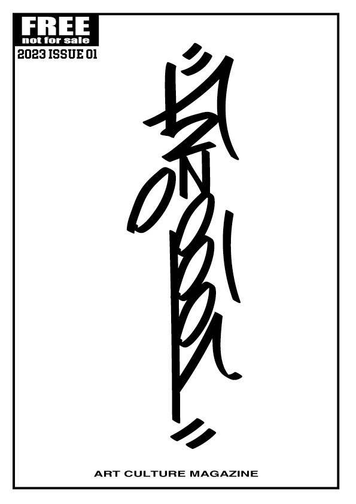

JOOOINTmagazin Archive
Issue 01
創刊号。JOOOINTmagazinの起点になる一冊として、 視覚アーカイブの最初の温度を持つ号。 実際の誌面内容、テーマ、制作背景、参加情報などをここに追加していける。
Overview
このページは各号の詳細ページ。 あとで誌面紹介、コンセプト、参加アーティスト、制作時のメモ、販売情報などを入れて拡張できる。
Concept
JOOOINTmagazinの各号を単なる雑誌ではなく、 独立した作品やポスター、アーカイブオブジェクトとして見せるための構成。
Notes
実際の本文や制作背景に差し替える。 将来的には誌面画像を複数並べたり、外部リンクや購入導線を追加してもいい。